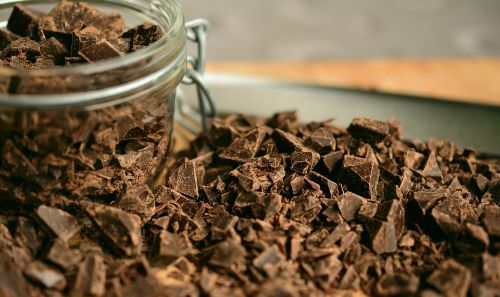

Unsweetened Chocolate
Unsweetened chocolate is just like its name implies. It’s pure chocolate liquor, made of simply of ground cocoa beans. It’s also known as baking chocolate, because it’s not meant for consumption on its own. Instead, it’s best when used in baking or cooking and combined with other ingredients to make it taste better. Contrary to popular belief, pure chocolate doesn’t taste very good. However, it lends a deep, rich chocolate flavor to recipes and is the base of most of the other types of chocolate.